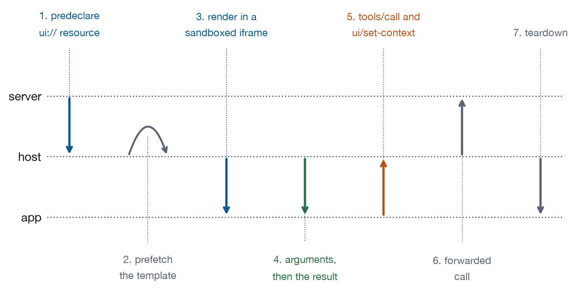

Chapter 6
The Machinery, Briefly
The lifecycle in one page, the four messages you will write, and the two channels.
This chapter exists so that no other chapter has to stop and explain the wire. It is deliberately short and deliberately incomplete. High-Performance MCP Applications covers the protocol down to the bytes; Patterns of MCP App Architecture covers what happens when you have forty of these things in production. What follows is the minimum a designer needs in order to make good judgements, which turns out to be about six facts and four messages.
Six facts
UI is a resource, declared in advance. Your server publishes an HTML document at a ui:// URI, with the MIME type text/html;profile=mcp-app, and it exists before any tool is called. That is what makes prefetching possible, and prefetching is what makes the first render fast enough to be worth having.
A tool points at it. A tool becomes an app by carrying _meta.ui.resourceUri, and that is the entire attachment mechanism. Tools without that field are ordinary tools that return text, both kinds can live on the same server, and a well-designed server usually has both.
It runs in a sandboxed iframe. The host puts your document in an iframe with a restrictive sandbox: your app cannot read the host’s DOM, cookies, or storage, and it cannot navigate the parent. The host also applies a Content Security Policy built from what the resource declares in its _meta.ui.csp, and the default is deny.
The policy lives on the resource, not on the tool. The tool carries the pointer, _meta.ui.resourceUri, and nothing else. The security posture, csp, permissions, and domain, sits on the UI resource, because a host reads it before it has called anything. That distinction is easy to get backwards and this book’s own gallery got it backwards once: a tool carrying a CSP declares nothing that anybody checks, and mcp-inspector --app-info would have reported an app with no policy at all.
Everything crosses by postMessage. The app talks to the host over window.postMessage, in JSON-RPC. Some methods are shared with core MCP, like tools/call. Most are new and prefixed ui/. Every message is loggable, which is what makes the medium auditable rather than merely sandboxed.
Results come in two shapes. A tool result carries content for the model and structuredContent for your app, and Chapter 2 is about the consequences of that split.
It is an extension, and it negotiates. MCP Apps is io.modelcontextprotocol/ui, which is optional. Client and server both declare it, and if either side does not, you get core behaviour: the tool runs and the text comes back. Your content string is therefore not a nicety. In several hosts it is the whole product.
Registering both halves
Two registrations, and they are the entire server-side surface of the extension.
Illustrative, not from the gallery
// The tool. `_meta.ui.resourceUri` is what makes it an app, and it is the
// only thing the tool needs to say about the UI.
registerAppTool(server, "compare_rates", {
title: "Compare loan rates",
description: "Show a comparison of the loan offers under discussion, ...",
inputSchema: { type: "object", properties: { horizonYears: { ... } } },
_meta: { ui: { resourceUri: "ui://rate-compare/after" } },
}, handler);
// The resource. One self-contained HTML document, and the security posture,
// because this is what a host reads before it calls anything.
registerAppResource(server, "ui://rate-compare/after", "ui://rate-compare/after",
{ mimeType: "text/html;profile=mcp-app" },
async () => ({ contents: [{
uri: "ui://rate-compare/after",
mimeType: "text/html;profile=mcp-app",
text: await readFile("dist/rate-compare.html", "utf8"),
_meta: { ui: {
csp: { connectDomains: [], resourceDomains: [] },
permissions: {},
prefersBorder: true,
} },
}] }));Two things about that HTML are worth stating because they trip everybody once. It is one document, with styles inline, scripts inline, and images as data URIs, not because bundling is fashionable but because the CSP the host builds from your declaration denies by default and an external stylesheet is an external request. The gallery resolves shared partials at serve time; a real project usually reaches for a single-file bundler. And it has no server of its own: no origin to fetch from, no cookies, no session. Everything it knows arrives over postMessage, so if your mental model of the app still contains an API call, that call is a tools/call through the host now.
The four messages you will actually write
Six facts is enough to reason with, and four messages is enough to build with. Here they are in the shapes the gallery’s bridge uses. One caveat worth stating plainly: ui/initialize is named in the published documentation, and the rest of the ui/ surface is specified in the ext-apps repository, which this book does not vendor. The names below are the gallery’s dialect of that protocol, chosen to match it, and they are the four that carry the arguments in this book. Check the specification for the exact list before you ship against it.
The handshake, where your app announces itself and finds out where it landed:
Illustrative, not from the gallery
// app -> host
{ "jsonrpc": "2.0", "id": 1, "method": "ui/initialize",
"params": { "appInfo": { "name": "Rate comparison", "version": "1.0.0" },
"capabilities": { "toolCalls": {}, "context": {} } } }
// host -> app
{ "jsonrpc": "2.0", "id": 1,
"result": { "hostInfo": { "name": "claude", "version": "..." },
"capabilities": { "toolCalls": {}, "context": {}, "openLink": {} },
"theme": { "mode": "dark", "cssVariables": { "--ink": "#E7EAEE" } } } }Read the capabilities that come back, because they are not decoration. A host that omits toolCalls will refuse every action your buttons trigger, and finding that out at click time means the user found out first. Chapter 12 is about designing for the answer rather than assuming it.
Then data arrives, and the host pushes twice with a real gap between the pushes:
Illustrative, not from the gallery
// host -> app, as soon as the model has decided
{ "jsonrpc": "2.0", "method": "ui/tool-input",
"params": { "arguments": { "horizonYears": 5 } } }
// host -> app, when the server answers
{ "jsonrpc": "2.0", "method": "ui/tool-result",
"params": { "content": [ { "type": "text", "text": "..." } ],
"structuredContent": { "horizonYears": 5, "offers": [ ... ] } } }Two callbacks, two states, and both of those states are screens somebody sees, which is why Chapter 3 treats the skeleton as a design surface rather than a placeholder.
Then action goes back out, and your button becomes a tool call that travels through the host:
Illustrative, not from the gallery
{ "jsonrpc": "2.0", "id": 2, "method": "tools/call",
"params": { "name": "hold_flight", "arguments": { "number": "UA 512" } } }Note whose name ends up on that call. The host is the one that talks to the server; your app asked. That indirection is where consent, logging, and refusal live, and it is exactly why Chapter 4 treats every control you add as a tax on somebody else’s attention.
And finally state goes back, which is the message most apps forget:
Illustrative, not from the gallery
{ "jsonrpc": "2.0", "id": 3, "method": "ui/set-context",
"params": { "content": [ { "type": "text",
"text": "Comparing over 4 years: Northbank is cheapest at $34,769." } ],
"structuredContent": { "horizonYears": 4, "cheapest": "Northbank" } } }Two fields again, for the same two users, for the same reason as everywhere else. There is a fifth message you should send and will not think about, ui/size-changed, which tells the host how tall you are; send it after every render and after every disclosure toggle, because a widget that reports its height once and then grows is doing the thing Chapter 10 identifies as the most annoying move available to an interface.
Negotiation is two lines on each side. The client declares what it can render, in _meta["io.modelcontextprotocol/clientCapabilities"], listing io.modelcontextprotocol/ui and the MIME types it accepts. The server declares the same extension in its capabilities. If either side is silent the tools still work: the model calls them, the server answers, the text comes back, and nothing renders. That is the design of the extensions framework rather than a degradation of it, which is why the specification tells servers to return meaningful text for clients that do not support the UI.
Images, fonts, and everything else you wanted to fetch
The single-document rule has consequences that surprise people on their first afternoon, and they all come from the same place: an external request is an external request, whether it is a script, a stylesheet, a font, or a logo.
Small images go inline as data URIs, which works and costs you about a third more bytes than the binary, so a 4KB icon becomes a 5.5KB string in your HTML and nobody notices. Large images do not, because the whole document is fetched before anything renders and a 400KB hero image is now 400KB of first-render latency for a card somebody is going to glance at. If your app genuinely needs large media, that is what declaring a resource domain in _meta.ui.csp is for, and Chapter 10 argues you should feel the cost of that declaration rather than reaching for it by default.
Fonts are the trap. A web font is a network request, so an app that specifies one without declaring the domain gets the fallback, silently, on the user’s machine and not on yours, because yours had it cached from the last time you opened the design file. The safe move is the host’s own stack: system fonts are already loaded, already match the surrounding conversation, and already look correct on a platform you have never tested. An MCP App in a custom typeface is usually an MCP App that is trying to look like its parent product, which Chapter 1 has opinions about anyway.
The same logic applies to the icon set nobody thinks about. Four inline SVG paths beat a webfont icon library by every measure that matters here: bytes, requests, render time, and the promise you get to make about network access.
The lifecycle in one page

The server predeclares the ui:// resource and nothing has happened yet. The host may prefetch the template on connect or on first sight of the tool, so your HTML is sitting in the host, ready. Then the model calls the tool and the host renders the template immediately, before the tool result exists, so your app is on screen with no data. Data delivery follows in two parts, arguments then result, which in the gallery’s bridge are ontoolinput and ontoolresult. The human interacts, and your app calls tools/call for actions and ui/set-context for state the model should know about, with the host mediating both, applying consent policy, and logging everything. Then the conversation moves on, the frame goes away, and anything you did not write back is gone.
That last sentence is the one to remember, and it is the whole of Chapter 7 in compressed form. The frame is transient. The transcript is durable.
Three things that surprise people
The template is cached and the data is not, which is the point of predeclaration. Your HTML is fetched once and reused across renders while your data arrives fresh each time, so anything you bake into the markup is effectively permanent for the session and anything that changes belongs in structuredContent. A widget that hard-codes today’s date into its HTML will be wrong tomorrow and nobody will be able to work out why.
Your app can be rendered more than once in one conversation. Two calls, two frames, both alive, both on screen, each holding its own state, and neither knowing the other exists. If that matters for your archetype, the transcript is the coordination mechanism: write state back and let the model reconcile.
And the height is a request rather than a declaration. You send ui/size-changed; the host decides, and it may grant it, cap it, or ignore it. Design so that a smaller allocation degrades to scrolling inside your own container rather than to clipped content, and never put anything important below a fold you do not control.
What a render costs in time
Chapter 1 argued that a render has to earn its place. Here are the mechanics of the cost, because they are specific to this medium and they surprise people who have optimised web pages.
The document is fetched whole before anything appears. There is no progressive rendering of a ui:// resource the way a browser streams HTML, so a 300KB app is 300KB of silence and then a card. That makes total document size the number that matters, and it makes the usual web tricks, deferred scripts and lazy images, largely irrelevant. Inline everything, and keep the total small enough that the fetch is not the story.
Prefetching hides most of that, when it happens. A host that has already fetched your template renders it the instant the tool is called, which is why predeclaration exists. You cannot rely on it, because a host may not prefetch and a first-ever call certainly will not, so treat prefetch as an optimisation you benefit from and never as an assumption.
The result is the slow part, and it is not yours. Between the render and the data sits your server, and whatever it talks to. This is the gap Chapter 3’s skeleton covers, and it is usually an order of magnitude larger than anything you can save in your bundle. A team that spends a week shaving 40KB off a widget whose tool takes 900 milliseconds has optimised the wrong number.
Which gives a rough budget worth holding yourself to. Keep the document under about 100KB, because that is small enough that the fetch disappears into the noise on any connection somebody is having a conversation over. Spend your attention on the tool call. And measure the thing the user actually experiences, which is the time from asking to seeing an answer, not the time from render to paint.
content versus structuredContent
Same fact, two renderings, one source. Chapter 2 made the design argument; here is the mechanical shape.
Illustrative, not from the gallery
run({ horizonYears = 5 }) {
const offers = priceOffers(); // computed once
const ranked = rankOffers(horizonYears);
return {
content: [{
type: "text",
text: `Comparing ${offers.length} offers over ${horizonYears} years. ` +
`${ranked[0].lender} is cheapest at ${money(ranked[0].total)}. ` +
`The user can change the horizon in the app.`,
}],
structuredContent: { horizonYears, offers },
};
}The content string is written for a reader. It says what happened, what the answer is, and what the human can do next, so a model that never renders your app can still answer questions from that one sentence, which is exactly what happens in hosts without the extension. The structuredContent object is written for your app and is deliberately complete, including the eight horizons the user has not selected, so the slider needs no round trip and no arithmetic happens in two places.
Three rules prevent most of the pain here. Compute once, deriving both from the same call. Write content for a reader rather than a log, because “Loan analytics suite opened.” tells the model nothing it can use. And put into structuredContent what the app needs plus what the model will be asked about, which is why Figure 5-2 drops seven columns from the pixels and keeps them in the data.
What is deliberately not here
To keep the promise at the top of this chapter, here is what this book will not explain and where it lives. Transport, framing, and session mechanics are in High-Performance MCP Applications, Chapters 2 and 3. Authorization flows are in its Chapter 4, the Tasks extension and long-running work in its Chapter 9. Fleet-scale concerns, versioning at scale, and multi-server hosts are in Patterns of MCP App Architecture. And the exact field names under _meta.ui are in the ext-apps specification, which is the normative document and which moves faster than any book.
When you do go to the specification, go for field names and their exact shapes, for the full method list, and for the threat model behind the sandbox in its complete form. Do not go to it for whether to render, because it is deliberately silent on judgment, which is the entire reason this book exists. One practical note on reading it: the extension evolves independently of the core protocol by design, so pin your reading to a dated revision the way this book does, and re-check the fields when you upgrade.
What to remember
UI is a predeclared ui:// resource, attached to a tool by _meta.ui.resourceUri, rendered in a sandboxed iframe, spoken to over postMessage in JSON-RPC. The template renders before the data arrives. The frame is transient and the transcript is durable. The result carries text for the model and data for the app, and both should come from one computation. And the whole thing is an optional extension, so the text path is not a fallback you tolerate. It is a product you ship.
Next chapter: what happens to your widget’s idea of the world while nobody is looking at it.